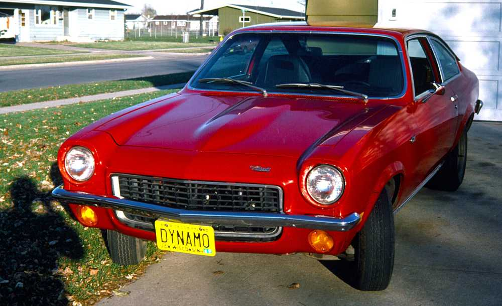
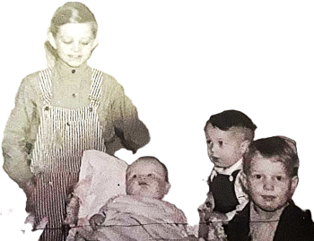
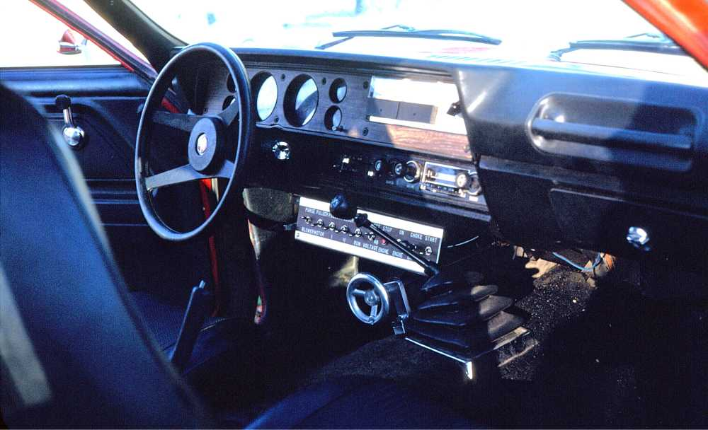
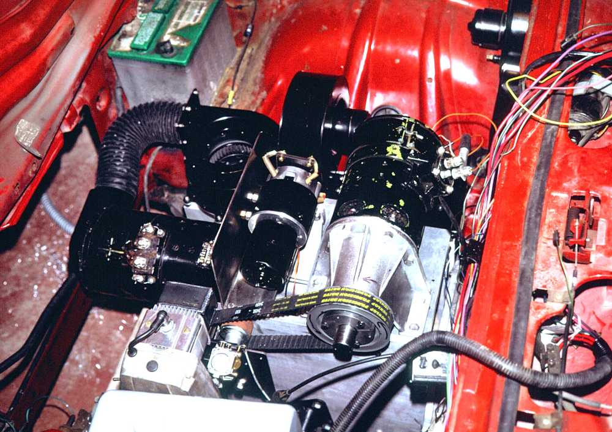

Bob's Hybrid

This page was last modified EST.
Father, Marshall O Holbrook,[FS Data 1] was born 1908-08-07 at McGee, MS, he married Louise 1931-07-19 in Texarkana, TX. He died 1933-06-02 near Wascom, TX, and is buried at Vivian, Caddo Parrish, LA.
Bob's Fatther, William O Holbrook was a native of Louisiana.
Mother, Louise M (Walton) (Holbrook) Bronstad[FS Data] was born 1908-04-26 in Hamilton Co., TX. She died 1989-08-18 in Fort Worth, TX, and is buried at St Olaf's Cemetery, Bosque Co., TX.
Bob's Mother, Louise Myrtle (Walton)(Holbrook Bronstad, was from a long line of Americans of North European descent. Some of the immigrants to America came in the 17thcentury.
Step-Father, Clyde Purnell Bronstad, [FS Data] was born 1896-06-20 in Cranfills Gap, TX; he married Louise 1936-07-19 in Waco, TX. He died 1989-12-26 in Clifton, TX, and is buried at St Olaf's Cemetery.
SELF Winnon Glenson (Bob) Holbrook [FS Data 1] [FS Data 2] was born 1932-05-08 To Louise and William O Holbrook in Wascom, TX. Bob died 2012-11-21 in Brillion, WI, and is buried at St Olaf's Cemetery
Half-Brother Gilbert Walton Bronstad [FS Data 1] was born 1940 in Cranfills Gap, TX
Half Sister Bette Louise Bronstad Bette Louise Bronstad was born 1946.
Father, Walter John Stiebs, [FS Data] was born 1912-02-11 in Wisconsin; he died 1992-01-02 in Waupaca, WI.
Mother, Felicia Charlotte Hanson, [FS Data]was born 1915-06-24 at Lind, WI; she died 2002-06-09 in Waupaca, WI, and is buried at Baldwins Mill Cemetery, Ogdensburg, Waupaca, WI.
SELF Charlotte Ann Stiebs [FS Data]was born 1935-06-05 in Manawa, WI; she died 2011-08-19 in Appleton, WI.
Brother Jim Stiebs [[dob]] Wisconsin {{dod}} ?
Sister Mary Stiebs born about 1938. I have no more information.
Sister Bonnie Stiebs, born about 1945. I have no more information.
Sister Debbie Stiebs. I have no more information.
[FG Data]: Find a Grave data: https://www.findagrave.com/
[FS Data]: Family Search data: https://www.familysearch.org
[Walt Data]: This site, Walts memories: https://gwbronstad.github.io/Walt-Kin/
Bob and Charlotte's Family
Wife, Charlotte Ann Stiebs, [FS Data] married Bob 1961-12-09 in Appleton, WI; she died 2011-08-19 in Appleton, WI. Charlotte in PostCrescent
Daughter Terri Dawn Holbrook Born 1954.
Son  Rex James Holbook Born 1955.
Rex James Holbook Born 1955.
Son Mark William Holbrook Born 1963.
1932-1939"
{From Wikipedia}
The Great Depression was a severe global economic downturn from 1929 to 1939. The period was characterized by high rates of unemployment and poverty; drastic reductions in liquidity, industrial production, and trade; and widespread bank and business failures around the world. The economic contagion began in 1929 in the United States, the largest economy in the world, with the devastating Wall Street stock market crash of October 1929 often considered the beginning of the Depression. Among the countries with the most unemployed were the U.S., the United Kingdom, and Germany.
The Depression was preceded by a period of industrial growth and social development known as the "Roaring Twenties". Much of the profit generated by the boom was invested in speculation, such as on the stock market, which resulted in growing wealth inequality. Banks were subject to minimal regulation under laissez-faire economic policies, resulting in loose lending and widespread debt. By 1929, declining spending had led to reductions in manufacturing output and rising unemployment. Share values continued to rise until the Wall Street crash, after which the slide continued for three years, accompanied by a loss of confidence in the financial system. By 1933, the unemployment rate in the U.S. had risen to 25 percent, about one-third of farmers had lost their land, and about half of its 25,000 banks had gone out of business. The U.S. federal government under President Herbert Hoover was unwilling to intervene heavily in the economy. In the 1932 presidential election, Hoover was defeated by Franklin D. Roosevelt, who from 1933 pursued a set of expansive New Deal programs in order to provide relief and create jobs. In Germany, which depended heavily on U.S. loans, the crisis caused unemployment to rise to nearly 30% and fueled political extremism, paving the way for Adolf Hitler's Nazi Party to rise to power in 1933.
Between 1929 and 1932, worldwide gross domestic product (GDP) fell by an estimated 15%; in the U.S., the Depression resulted in a 30% contraction in GDP.[1] Recovery varied greatly around the world. Some economies, such as the U.S., Germany and Japan started to recover by the mid-1930s; others, like France, did not return to pre-shock growth rates until later in the decade.[2] The Depression had devastating economic effects on both wealthy and poor countries: all experienced drops in personal income, prices (deflation), tax revenues, and profits. International trade fell by more than 50%, and unemployment in some countries rose as high as 33%.[3] Cities around the world, especially those dependent on heavy industry, were heavily affected. Construction virtually halted in many countries, and farming communities and rural areas suffered as crop prices fell by up to 60%.[4][5][6] Faced with plummeting demand and few job alternatives, areas dependent on primary sector industries suffered the most.[7] The outbreak of World War II in 1939 ended the Depression, as it stimulated factory production, providing jobs for women as militaries absorbed large numbers of young, unemployed men.
-Marshall Holbrook, 24, manager of Magnolia filling station at Waskom, was instantly killed early Friday morning when the automobile he was driving overturned about a mile east of Waskom. The car skidding in sand cause of the accident.
Three other persons, Gaston James, N. G. Findley and R. B. Graves of Waskom received bruises and lacerations but were not seriously injured.
Holbrook is survived by his wife [Louise M Holbrook] and one son [ Winnon Glenson (Bob) Holbrook] and his father [Lewis W. Holbrook].
As quickly as a car can flip over, Louise and Bob's lives were turned upside down. Like Gaston James, N. G. Findley and R. B. Graves, the fatal car wreck injured Louise and Bob too and their injuries would take far longer to heal.
A wife became a widow, one protected by a marital partner became one abandoned and new burdened by becoming sole protector of her child, a secure housewife became uncertain job seeker in a depression economy, one having a place in her community became an economic wanderer seeking home and stability.
Louise's tragedy mirrors the tragic path of her Mother, Ethel, who in turn mirrored the tragic path of her Mother, Josephine.
- Josephine's first marriage in 1870-07-24 to Angustus H. Berger,
- created a child, Mary Pauline Berger. born 1873-05-15,
- ended in Berger's death, about 1874, consequent to a railway accident.
- Widowed with child,
- Josephine married James Monroe Embrey in a ceremony conducted by W. W. Sammons in Tippah County, MS., 1877-10-21.
- 7 chldren issued from this marriage.
- Ethel's first marriage in 1899-09-28 to L. N. Price
- involved a 10 year old child, William Sterling Price whom widower, L. N. brought to the marriage,
- ended in L. N Price's death 1900-02-18.
- Widowed with child, whom the Price relatives chose to rear,
- Ethel wed William Twyman Walton 1901-12-17.
- 6 chldren issued from this marriage.
- Louise's first marriage in 1931-07-19 to Marshall Holbrook,
- created a child, Winnon Glenson (Bob) Holbrook,
- and ended in Marshall;s death 1933-06-02 consequent to an automobile accident.
- Widowed with child,
- Louise wed Clyde P Bronstad 1936-07-19.
- 2 chldren issued from this marriage.
The Cranfills Gap High School had its formal opening last Monday morning. The devotional exercises were led by Rev. Farmer. Interesting and constructive talks were given by the following: Rev. J. A. Urnes, Mrs. Clara French Richards, Prof. E. B. Harris and Prof. E. P. Christensen. Miss Lurline Linn of Clifton rendered piano solo. The teachers for the school term just opened are as follows: Prof. Chauncy Ford, superintendent; Prof. Thilman Rogstad, coach; Mrs. E. B. Harris, English Mr. Charles Romine, principal of the grammar grades; Mr. Oran Knudson, Mrs. Louise Holbrook and Miss Johnnie Broyles, teachers in the grammar grades. . .
The first Clifton Record mention of Mother is in conjunction with 'Brother Farmer' whom I knew only in Mother's frequent references to him. Put simply, the demands of propriety for a young widow and school teacher were met by boarding with the Methodist minister and his wife.
Bob, who would have been age 2 at this time, remembered Brother Farmer; likely reliable memories happened at a later age.
The Sociology, Home Economics and Civics classes are going to Dallas and Fort Worth this week-end. They are planning to visit several factories and plants, and will be special guests of the Ford Motor Company in Dallas Saturday. Mr. and Mrs. Ford, Mrs. Harris, Mr. Knudson, Miss Broyles and Mrs. Holbrook are the teachers who are going. We are taking both buses for transportation.
This is a rural school, busing is important to bring school children from miles around in all directions; in 1935 Cranfills Gap made do with two buses. There is no clue of how Louise dealt with 2 year old Bob. Likely she found a nurse in the Gap or left him with Ethel and Will Walton in Hamilton.
Miss Broyles’ room had a Valentine party last Thursday afternoon together with Mrs. Holbrook’s room The visitors were Bobby Holbrook and Ray Miller.
Mrs. Holbrook’s and Miss Broyle’s pupils went on an Easter egg hunt the Thursday before Easter. There were also three visitors: Bobby Holbrook, Beverly Harris and Fred Finstad . . .
Bobby Holbrook is attending the nursery school at the Teacheer's College.
Bette Bronstad found one clue to the puzzle of childcare. Mother's situation, a teacher wanting to improve her credentials and needing to care for a child, must have been a familiar problem. The Teacher's College addressed it with a nursery school.
Mr. and Mrs. Binous Tindall, Rev. and Mrs. J. D. Farmer and family, Mrs. Louise Holbrook and son, Bobby and Mr. Clyde Bronstad are fishing on the Llano River this week. . . .
So it seems my Father is courting my Mother; Mother has multiple chaperones along to insure every appearance of propriety. After all, she could not bring the river to the parsonage. This event may be the one recorded in a photograph of Clyde, Louise and Bobby. Or it may be the similar event a year later.
Mr. and Mrs. Binous Tindall became lifelong family friends. Both Binous and Myrle were pillars of the Cranfills Gap Methodist Church.
The Home Economics girls began studying Child Care last week. On the days that we are supposed to have laboratory lessons, we observe children from two to five years old. We study their reactions to certain conditions. We have toys for them to play with; serve them cocoa, and teach them to play group and finger games. The children we observed last week were Bobby Holbrook, Marivone Windham, Mary Nell Rohne, Patsy Lou Grimland and Billie Dunn. . . .
Bobby is getting a lot of exposure to school settings; that may have helped him develop the exceptional social skills he demonstrated later in life. Louise was lucky that the little rural school district would permit the 3 year old in school.
I'm sure Mrs Farmer could not devote all her attention to Bobby; Mother must have found childcare a dificult problem.
Mr. and Mrs. W. T. Walton made announcement this week of the marriage of their daughter, Mrs. Louise Walton Holbrook to Mr.Clyde Bronstad. The wedding ceremony was solemnified in the Lutheran church at Waco on Sunday,July 19.
The young couple spent their honeymoon in Galveston and in traveling through the coast country. They are now at home in Cranfills Gap, where Mr. Bronstad is successfully engaged in the grocery business. At present they are occupying apartments in the Meeks home, but Mr. Bronstad plans to build a beautiful new home in the near future.
Mrs. Bronstad, the former Miss Louise Walton of Hamilton, is a member of the faculty of the Cranfills Gap public school, one of the best institutions in this section of the state. She entered the school last year as a teacher and was re-elected. She is highly educated, being a graduate of the North Texas State Teachers College and well trained for her work, and is universally popular in Cranfills gap and surrounding country. she is gracious in manner, and is attractively accomplished and is a charming addition to Cranfills gap society circles.
The groom is a son of Mr. and Mrs. G. O. Bronstad, one of the representative families of long time residence in Cranfills gap. He is successful in business and is highly esteemed by a legion of friends to whom his new happiness is of utmost importance.
Attesting to the popularity of Mr. and Mrs. Clyde Bronstad, Mrs. Binous Tindall entertained in her attractive home on Monday afternoon, July 27, with an elaborately planned gift shower. The hostess was assisted in her courtesy by Mrs Cora Nelson Harris of Clifton, who entertained the guests with a cleverly arranged program of music during the reception hours when some one-hundred friends called and added to the prized possessions of the delighted bride numerous beautiful and useful gifts for outfitting her home for housekeeping. A bevy of lovely young girls served ice cream and date loaf wafers to the guests
Among the guests were a group from Hamilton including Mrs Aubrey Walton, sister of the bride: Mrs E. B Moore, Mrs C E Horton and Mrs S. S. Durham, relatives of the hostess - Hamilton Herald-Record.
Bobby told me a story on himself, going around the Gap saying, "Mother and me are going to marry Clyde."
Homer Bronstad has begun the erection of a new residence in the west part of town. He purchased the lot from Mrs. M. J. Mickelson
After World War II, Clyde's family lived for a couple of years in this house. This was after we lived in the Blum house and after Homer and family moved to Vernon TX.
Mr. and Mrs. Binous Tindall, Mr. and Mrs. Clyde Bronstad and son and Rev. and Mrs. Farmer and son are on a fishing trip to the Llano River.
This event, or a similar event a year earlier, may be the one recorded in a photograph of Clyde, Louise and Bobby.
Mr. and Mrs. Clyde Bronstad and son, Bobby, have been vacationing and visiting in New Mexico during the past two weeks.
Summer in Central Texas is brutal, Clyde's new home was too new to have tree shade. Two hard days drive to the West, lay the mountainous climate of villages like Cloudcroft or the town of Ruidoso. Though the drive through West Texas and Eastern New Mexico could be hotter, comfort came with the far lower humidity and the cooling blast of lowered car windows rolling at 60 miles per hour down the highway.
Mrs. Clyde Bronstad and son, Bobby, spent several days last week with Mrs. Bronstad’s mother, Mrs. Walton in Hamilton.
Mr. and Mrs. O. J. Bronstad and daughter, Charlene; Mr. and Mrs. Clyde Bronstad and son, Bobby Holbrook were guests last Sunday in the home of Mr. and Mrs. Homer Bronstad at Blanket, Texas.
Mr. and Mrs. Clyde Bronstad and son, Bobby, left Sunday for Odessa.
In a community like Cranfills Gap, very little went unnoticed. There were no Gestapo or NKVD spies earning their State Security keep, but there were neighbors who wanted to know which kin visited whom and where their neighbors had been the last two days.
Such information did not so much stabilize the state as sell the local weeklies, The Clifton Record or the Meridian Tribune. To me, The Clifton Record offered richer ore. There seemed to have been more Norwegian ties between Cranfills gap (the Gap) and Clifton than between the Gap and Meridian.
Other expressions of this web of social interest were less beneficial. Religious tension extended into Clyde's home and hobbled household harmony. Louise was a committed Methodist and Clyde was a formally Confirmed Lutheran. Clyde and Louise wed not in Cranfills Gap's St Olaf Lutheran Church, but in a Lutheran Church in Waco. Surely they agreed on mutual acceptance, but the difference continually hampered harmony. Conflicting issues were often decided on the battleground of scriptural quotations.
Each, Clyde and Louise, retained their religious affiliation to the end of their lives. They were finally united in their joint graves.
1940-1944
| Name | Sex | Age | Residence Date |
Relation |
|---|---|---|---|---|
| Clyde Bronstad | M | 43 | 1935 | head |
| Louise Bronstad | F | 31 | 1935 | Wife |
| W Glenson Holbrook | M | 7 | 1935 | Stepson |
A son was born to Mr. and Mrs. Clyde Bronstad. He has been named Gilbert Walton and is a fine, healthy child, He and his mother are reported to be doing nicely.
Corner 2nd & Clifton in Cranfills Gap, Texas.
(~1935 - 1943)
Hello World
As best as I can remember, I was born in my parents home, in my parent's bed, delivered by family friend, Dr J. R. Shipp, in a tiny Texas town where dwelt my grandmother, two uncles, and three aunts. So agreeable to greet land life in so familiar a place. That tiny pond of my own pee was getting too small.

- Dad had built a house to please Mom.
- Mom had borne a son to please Dad.
- Family and kin were gentle, loving souls
- All seemed well.
Brother Bob, me, and cousins Maurice and Gorlyn.
Mom's pressure cooker was a great toy till I tottered on to the steam vent and got a scar. Luckily it was between my eyes, not on left or right. Mom took the toy away though.
Bob was a fine horsey, but, lacking a crop, my using a toy mallet while commanding "giddyup." generated a life-long sore point for Bob.
I used to think my hot refusal of baby food had to do with unsweetened pablum, now I think, for an infant, cow's milk is a poor substitute for Mother's milk. And that founded my plaint. The word 'weaning' came up often in my childhood.
s ✓
The class citizenship club officers have been elected. Bobby Holbrook is to be responsible for the first program and Lucille McAdams will direct the second program
Mr. and Mrs. Clyde Bronstad and son Bobby, were business visitors in Waco Monday.
Mr. and Mrs. Clyde Bronstad and sons, Bobby and Walton, spent Christmas day with her parents, Mr. and Mrs. W. T. Walton of Hamilton. . . .
Mr. and Mrs. Clyde Bronstad and sons, Bobby and Walton, were guests Sunday in the home of her parents, Mr. and Mrs. W, T, Walton of Hamilton.
Mr. and Mrs. Clyde Bronstad and sons, Bobby and Walton, and Miss Marguerite Bronstad were business visitors in Fort Worth Saturday.
This may indeed have been for business. After the death of her first husband, Marshall Holbrook in 1933, Mother, daughter of a farmer, ploughed some of Marshall's life–insurance money into a modest Fort Worth rental property as a surety for their son, Bobby.
War work has Clyde in a more urban locale; he will have investigated the cost of rental property to relocate his family. The economics of massive war-time relocation will have chased rental prices to heights frightening for rural folk. Clyde and Louise will have responded, wanting competitive rents for their Fort Worth property.
Most likely, they would have relied on Uncle Embrey Walton, a long time resident of Fort Worth, to look after their interest as rental agent.
Mr. and Mrs. Clyde Bronstad and sons, Bobby and Walton, spent Sunday with her parents, Mr. and Mrs. W. T. Walton of Hamilton. Bobby remained to continue his visit for several days. .
Except for Louise, Will and Ethel's children lived far away, Bobby was old enought to care for himself, help with chores and dispel the loneliness of their farm.
Mrs. S. H. Walton came in last Saturday from her home at Wichita Falls for a visit in the home of her brother-in-law and sister, Mr. and Mrs. Clyde Bronstad. She returned home Tuesday accompanied by Mrs. Bronstad and sons, Bobby and Walton. . . .
Mr. and Mrs. Clyde Bronstad and sons, Bobby and Walton, spent Sunday with her parents, Mr. and Mrs. W. T. Walton of Hamilton. . . .
Business visitors in Waco Wednesday were Mr. and Mrs. Clyde Bronstad and son, Bobby, and Mrs. Chris L. Rohne and daughters, LoVerne and Marynell.
Clyde's training comes to fruition in employment at Blackland Army Air Base, near Waco. Clyde will will have needed workweek lodging in Waco. It's likely he lodged with his Uncle Otto who retired after years of work in Waco. Aunt Marie and her daughters would have wanted to visit with their Uncle (and Great Uncle) Otto.
Mr. and Mrs. Clyde Bronstad and sons, Bobby and Walton and Miss Vivian Embrey were in Hamilton Sunday visiting relatives.
Vivian Embrey Was Louise's cousin, she may have cared for me for a while.
Mr. and Mrs. Clyde Bronstad and son, Bobby, Derwood Johnson and Miss Vivian Embrey were in Fort Worth Saturday.
Miss Vivian Embrey left last Thursday for San Antonio where she is employed. Mrs. Clyde Bronstad and son Bobby, were business visitors in Hamilton Saturday.
Mr. and Mrs.Clyde Bronstad and sons, Bobby and Walton, visited with her parents, Mr. and Mrs. W. T. Walton near Hamilton. . . .
Mr. and Mrs.Clyde Bronstad and son, Bobby, were visitors in Fort Worth Saturday
Mrs.Clyde Bronstad and son, Bobby were business visitors in Hamilton last Saturday.
Mrs. S. H. Walton returned to her home in Wichita Falls Tuesday after a visit in the home of her Brother-in-law and sister, Mr. and Mrs. Clyde Bronstad. She was accompanied home by her nephew, Bobby Holbrook
This looks like standard–issue, Clyde+Louise preparation for a move. The move from Cranfills Gap to Waco.
Bobbie was 11 years old, not old enough to be of large use, old enough to be in the way. Besides, she had a 2–year old to take care of: me.
Mrs. S. H. Walton returned to her home in Wichita Falls Tuesday after a visit in the home of her Brother-in-law and sister, Mr. and Mrs. Clyde Bronstad. She was accompanied home by her nephew, Bobby Holbrook.
Mr. and Mrs. W. T. Walton of Hamilton were here Sunday for a visit in the home of their son-in-law and daughter Mr. and Mrs.Clyde Bronstad. They were accompanied home by their grandson Bobby Holbrook. .
Looks like Aunt Annie Joy had her fill of controlling an 11-year-old Bobbie. Turn the lad over to the backup crew, the grandparents. Bobby and Grandparents were more familiar with each other.
Mr. and Mrs.Clyde Bronstad and sons, Bobby and Walton, of Belmead were overnight visitors with his mother, Mrs. G. O. Bronstad Sunday.
Finally moved; presumably to 1228 Lewis St in Bellmead, TX.
Mrs. J. R. Shipp and children recently of San Antonio, and Mrs.Clyde Bronstad and sons of Bell Mead were here Tuesday visiting relatives and friends.
Mr. and Mrs.Clyde Bronstad and sons, were here from Belmead Sunday for a short visit with relatives and friends.
Mr. and Mrs.Clyde Bronstad and sons, Bobby and Walton, of Belmead were visited at the home of Mrs. G. O. Bronstad Saturday while en route to visit her parents, Mr. and Mrs. W. T. Walton of Hamilton. They were also accompanied by Miss Jacqueline Johnson of Waco who spent the week-end here with relatives..
Mrs.Clyde Bronstad and sons, Walton and Bobby, returned to their home at Bell Mead Tuesday following a visit with her parents, Mr. and Mrs. W. T. Walton of Hamilton and her mother-in-law, Mrs. G. O. Bronstad of Cranfills Gap, . .
Mr. and Mrs.Clyde Bronstad and sons, Bobby and Walton, of Bellmead were dinner guests Sunday in the home of Mr. and Mrs. Homer Bronstad. . . .
Mr. and Mrs.Clyde Bronstad and sons, Bobby and Walton, of Bellmead were visitors in the Chris L. Rohne home Sunday. . . .
The following were guests in the home of Mr. and Mrs. Clyde Bronstad of Bellmead Sunday: Mr. and Mrs O. J. Bronstad, Allen and Charlene, Miss Marguerite Bronstad, Mr. and Mrs Chris L. Rohne, Geraldine and Marynell.
Mr. and Mrs. Clyde Bronstad and son, Walton , were here from Bellmead Monday, for a short visit with relatives.
Mr. and Mrs. Clyde Bronstad and sons, Bobby and Walton, were here Sunday from their home at Bellmead, visiting in the home of his mother, Mrs. G. O. Bronstad.. . .
Mr. and Mrs. Clyde Bronstad and sons, Bobby and Walton, of Belmead were spent Sunday night and Monday with his mother Mrs. G. O. Bronstad and other relatives and friends.
Mr. and Mrs. Clyde Bronstad and sons, Bobby and Walton, of Bellmead were here Tuesday, enroute to Hamilton to visit Mrs. Bronstad's parents, Mr. and Mrs. W. T. Walton. . . .
Mr. and Mrs. Clyde Bronstad and sons, Bobby and Walton, of Belmead were spent Sunday night and Monday with his mother Mrs. G. O. Bronstad and other relatives and friends.
Mr. and Mrs. Clyde Bronstad and sons, Bobby and Walton, of Bellmead were here Tuesday, enroute to Hamilton to visit Mrs. Bronstad's parents, Mr. and Mrs. W. T. Walton. . . .
1224 Lewis Ave. in Bellmead, Texas.
(~1943-1945)
Occupants
I slept between Clyde and Louise in the back bedroom double bed, my middle name could have been 'contraceptive'. Bob had the front bedroom all to himself. Frequently there was a fifth person there, but I don't remember who or where she slept. Some times "she" was Vivian Embrey, one of Mother's first cousins. During wartime there were better and higher uses for able workers, and Vivian probably responded accordingly.
Crayons
Clyde heated the living room with a massive, fuel oil furnace. The outside was enamel brown. I loved Crayolas. I loved the intense colors of Crayons but found them faithless. Yes, one could draw a line on paper with the red crayon, but it had betrayed the brilliance of the Crayola, the drawn line lost saturation. It betrayed it's promise.
Bob showed me if one applied the Crayola to the heated, brown enamel surface, one could draw a drippy line that retained the saturation of the wax crayon. This was wonderful; Crayolas became faithful; they fulfilled, the red, yellow, green, violet and blue promises, even white kept it's promise on brown enamel.
The smell of liquid Crayola soon got my parents attention; they rushed out of the kitchen into the living room, alerted by an unfamiliar odor. They cavalierly stopped my artistic endeavors with some incomprehensible warning about fire. I saw no fire, but stop I must.
Later, I discovered my artistry could be out of view if I crawled behind the furnace on my belly, I might reached for Michelangelo‘s artistic height, though prone on the floor. The odor continued to give me away. Soon spring ended the need for heat and withdrew my magic canvas.
Clyde and Louise worked.
And so did Bob for a while. In addition to school work, Bob had a bike and a paper route delivering one of the Waco newspapers of the time. Until some thuggish lads beat up Bob. His face bruised, forearms checkered with menacing scabs. Father and Mother thought it better Bob quit the job and avoid danger.
Wally in Bob's workplace.
Mother left to teach at LaVega Public School before I woke. Father had the afternoon shift at Blackland Army Flying School, he left before Mother got back home. I didn't like being left alone, so watching father get ready for work, I got into the '36 Ford before he got in and would not leave.
That was a problem for Clyde, he could not take me to Blackland, could not leave me at home because I threatened to follow him on foot. He drove along struggling with the dilemma I posed. He grasped upon, "I'll have to give you to a Nigger Lady." The threat didn't really process until Clyde pulled alongside an Afro-American woman walking along the roadside; Clyde rolled down my car window and said, "Hey lady, would you like a little boy?". I looked into her strange, astonished face and screamed, "I'll stay home! I'll stay home!"
Clyde ended such further strife by locking the car doors at home. But that didn't fix my need for security, for having an adult around. There was a war going on, who'll save me from the Nazis? One day, as Clyde slid in behind the wheel, door half closed, I ran up, jumped on the running board and grasped the external hinge of the '36 Ford driver's door. When the door fully shut, the closing hinge burst my right middle finger like a balloon. I remember no more, but I'm sure the event was traumatic for both Clyde and me. 80 years later the finger is still looks slightly mangled.
What to do with toddler Wally during wartime? Too young to become a latch-key kid, Mom took me to day care with periods of outdoor play (A play mate introduced me to pill bugs.), naps on cots (I was scandalized that boys and girls went together in the same toilet room.), and finger paint or other arts.
On one rare visit to Mother's school, I was drawn to the many profiles of American, Nazi and Japanese war planes, arrayed on the walls above eye level. I learned 'theirs' from 'ours', bombers from fighters.
Like our war birds flying oft above, school posters, radio news and bulletins, and movie newsreels kept the Axis menace ever close to our thoughts.
Great genitalia show off.
I knew no pre-schoolers south of our house, but quite a few of us were to be found to the north. Next door was Gordon Johnson with whom I might play. Gordon connected with more children north to the street corner. One bright day, a juvenile organizing genius had set up among 8 or so preschoolers a deal whereby one child stood security guard against adults at the garage door while boys and girls within might drop their pants to reveal their genitalia to each other.
Well I wasn't going to miss out on that. I had already intuited that sex was powerful, hidden and forbidden, no way I would walk from this apocalypse.
The planning was good but the staging dreadful. With garage doors shut there was almost no light for seeing. Actors were skittish lest a parent appear and punish taboo breakers. The Bellmead 'Naughty Bits Review' broke up almost before it began. Likely there were more performances, but none included me.
Visitors.
The Clifton Record records many visitors to our house; I recall but two. Mother's sister Aubrey's visit was memorable because of the rainy night drive to the train station to pick Aubrey up (or send her off, not sure)
Mother's sister Annie Joy made her visit memorable because she tried to stick me with a nickname. As a bow-legged pre-schooler with a ten inch stride, my corduroy cuffs whipped past each other with a 'thwip-thwip' sound. Probably amused at my sound, she called me "twisty britches".
What has stayed with me is the preparation. Visitors meant large meals and large meals centered around one or more chickens. Clyde would dispatch a live bird by lodging it's neck between crossed clothes line wires. Then flip the bird to shorten it's suffering. Plunging the bird in a pail of boiling hot water helped Louise pluck the chicken clean of feathers. Then she or Clyde would butcher the bird(s) into what became dinner-table chicken anatomy. Drum stick, thigh, back, wing, breast, liver, gizzard, neck, wish bone.
Medicine.
Childhood anemia meant I could either get iron shots in my butt or eat animal liver. Promising I'd eat liver put off the jabs and eventually I learned to like liver.
On my parents turn to promise, they promise me all the ice cream I wanted if I'd submit to Dr Aid's removing my tonsils. Dr Aid laid me down on an ironing table and began to suffocate me with a handkerchief while my parents held me down. He poured perfume on the handkerchief and I recall no more till I awoke. Groggy, throat on fire, I wanted no ice cream. Nothing. Trust corroded.
s ✓
1945-1949
Mr. and Mrs. Clyde Bronstad and sons, Bobby and Walton, of Bellmead, were here Saturday for a short visit with his mother, Mrs. G. O. Bronstad, and other relatives… .
Mr. and Mrs. Clyde Bronstad and sons, Bobby and Walton, of Bellmead, spent Saturday night with relatives and friends. The main reason for their visit was to visit Mr. Bronstad’s brother, Homer Bronstad, on leave from San Diego, California… .
Mr. and Mrs. Clyde Bronstad and sons, Bobby and Walton, of Bellmead, were in Cranfills Gap Tuesday visiting his mother, Mrs. G. O. Bronstad, en route to Hamilton for a visit with Mrs. Bronstad’s father and mother, Mr. and Mrs. W. T. Walton… .
Mr. and Mrs. Clyde Bronstad and sons, Bobby and Walton, of Bellmead, were in Cranfills Gap visiting his mother, Mrs. G. O. Bronstad and other relatives.
Guests in the home of Mr. and Mrs. Homer Bronstad Sunday were Mr. and Mrs. Mervin Knudson and Miss LoVerne Rohne of Fort Worth, Mr. and Mrs. Clyde Bronstad and sons, Bobby and Walton, of Bellmead, and Mr. and Mrs. Oran Knudson and children, Myron, Kathryn Sue and John Benjamin, of Hamilton.
Mr. and Mrs. Clyde Bronstad and sons, Bobby and Walton, spent Sunday in Fort Worth, visiting in the home of Mr. and Mrs. W. E. Walton.. . .
Mr. and Mrs. Clyde Bronstad and sons were in Hamilton Sunday for a Mother’s Day visit with Mrs. Bronstad’s father and mother, Mr. and Mrs. W. T. Walton.
Mr. and Mrs. Clyde Bronstad and sons spent Sunday with their parents and grandparents, Mr. and Mrs. W. T. Walton of Hamilton.
Mr. and Mrs. Clyde Bronstad and sons spent Sunday in Fort Worth visiting in the home of her brother, W. E. Walton and family.
Mrs. Clyde Bronstad and sons, Walton and Bobby, left Sunday for Odessa for a visit with her sister, Mrs. W.E. Mapp and family.
Mrs. Clyde Bronstad and sons, Bobby and Walton, spent several days in Fort Worth last week on account of the illness of Mrs. Bronstad’s mother, Mrs. W.T. Walton of Hamilton.
Mr. and Mrs. Clyde Bronstad and sons, Bobby and Walton, returned Tuesday from Wichita Falls, following a visit with Mrs. Bronstad’s brother-in-law and sister, Mr. and Mrs. S.H. Walton
Mrs. Nell Posey of Waskom spent several days last week visiting in the Clyde Bronstad home.
Nell Posey was Bob Holbrook's Great Aunt, Maternal Aunt of Bob's Father Marshall Holbrook. So nice of her to keep up family connections with her Great-nephew and his Mother. Otherwise Mother had very little connection with her first husband, Marshall Holbrook’s relatives. Mother thought they blamed her for Marshall’s death.
In a deal that was consummated Tuesday of this week, Mr. E. A. Thompson of Hico sold his farm adjoining town to Mr. R. O. Blum, formerly being the Mrs. M. J. Mickelson place.
near Bosque/Hamilton county line in Cranfills Gap, Texas.
(~1945 - 1947)
Remembering the Child
Clyde and family lived in the Blum house 1945–1947; it was wonderfully spacious, having more rooms than we could purpose. One or more upstairs rooms was locked, securing others' property, (Mrs. M. J. Mikelson? Mr. E. A. Thompson?) there was a sewing room in which very little was sewn, my bedroom and Bob's bedroom. Downstairs was a smallish kitchen, an enclosed back porch, a bathroom complete with a heat-on-flow hot water heater that intimidated Clyde, a large dining room, an entry room and a family room.
Though I haven't been on that property in over 3/4 of a century, it still houses many of my childhood memories. In that house, —
- Though I had been ill before, in the Blum house I was first aware of being ill, spending nights on an Army surplus folding cot in the kitchen. Perhaps for warmth, perhaps for medicated steam.
- Bob suffered mumps in his adolescence; he was quarantined to the back, enclosed porch; Dick and I were sternly warned to keep our distance, both to avoid disease and to avoid the wrath of an inexplicably testy Bob.
- Mother taught me love of the pussy–willow catkins bulging day by day in spring warmth, until the slough of spring hail surrounded the house and shocked the pussy–willow into pause.
- I witnessed Mother making her nest for her new chick.
- New–born Bette came home as an infant, separating me from a Mother's attention.
- We would gather around the dining table to play dominoes, or play with my new Christmas present, a Big-Bang Canon.
- Mother began teaching me to read.
- In fall of 1946 I began elementary school. Miss Jackson was was both my 1 st and 2 nd grade teacher in Cranfills gap's 3 x 2 room elementary school. Tall windows and big light globes made it bright inside. Each room had 5 foot cylinder, wood fired stove for heat. Each desk had a hole for an ink well and we learned to write both with pencil and (riskier) steel nib pens dipped in ink. Restrooms were outside in a cinder block restroom added on to an older, middle school building. The cafeteria was uphill, past the woodpile. All children were fed lunch. At recess, we were largely left to our own devices.— which infrequently were fights among boys.
- Disney comic books became my reading choice.
- Aunt Travis sold us The World Book Encyclopedia.
- World Book illustrations of WWI and WWI military kit refueled a little boy's fascination with war.
- I got a pet white rabbit, which I was hopeless at taking care of.
- Later, I got a dog, with results no better.
- Rather than wear my bright red shirt-jacket past the bull grazing in a field along my path to school, I played hokey. Mom and Dad couldn't understand how dangerous wearing red near a bull was. But then, they probably had not seen the right movie cartoons.
- One Christmas I got a Gilbert's Chemistry Set. My Cousin, Janetha June did well at TCU, studying chemistry, but no one in the house could field my questions about chemistry.
- For the better part of one summer, (probably the summer of 1947) I owned Mother, all to my own, — except for little sister who slept a lot. Clyde and Bob were away in Kansas and states further North, earning money on wheat harvesting crew. (This was the summer Clyde and Homer sold out to Clarence Johnson and Homer resumed his career in Public Education.) They returned by train, we met them, late at night at the train station in Meridian. Bob brought me back tiny black and white plastic Scott terriers mounted on magnets.
- I got my clock cleaned and a first lesson in astronomy when I insisted on playing football with much larger Bob and Arlen Rohne.
- Mother showed me milkweed in the front pasture and it's importance to Monarch Butterflies.
Post WW II, Clyde believed, would see a return of a depression. Maybe this was more an argument for Mother's benefit, clearly family ties to Cranfills Gap would help him resist the Urban pull that urged so many away from Bosque County to urban areas like Fort Worth, Dallas, Houston and San Antonio. His family model was of a Father passing a livelihood on to a son, even though, in his Father's case, that son was the oldest boy, Otis. But Otis had switched from Bronstad store to Gap Postmaster. Now the two younger sons, Clyde and Homer gave the rôle of merchant a go. That model of legacy likely led Clyde to showing me some of the work of business.
Clyde some times took me with him to country locations connected to store commerce. We visited a farmer who sold him a cow. The farmer led the beast to the prepared place; wanting to dispatch the cow with most certainty, he took very careful, close aim with his .22 rifle, fired and the beast obediently collapsed in place. Clyde and the farmer went about the familiar work of butchering an animal into food.
Another time, Clyde took me into the countryside where a man made rope. We watched as the clever but simple machine braided smaller strands into into lengthening and stronger rope. There was something strangely furtive about the approach to the property and the exchanges between the man and Clyde. Almost fourscore years later, my guess is that hemp growing was again made illegal after the end of WW II, and this farmer was still pursuing a livelihood growing hemp for rope.
Gul, (Norwegian for yellow) was Grandma Bronstad's yellow tabby. His yellow coloring gave poor protection from Central Texas' intense sun; he developed an ugly cancerous lesion over his yellow-white nose. Family consensus was that Gul's got to go. The onerous task fell to Father. I got wind of the mission; for me, "death" was but a word, I wanted to see it.
Father disliked guns, he never bought one, once he had near fatally shot himself in the thigh. He borrowed a .22 rifle from a friend and took me, Gul, the rifle around the mountain. The road, was a dirt road, Wiese street going past Aunt Margaret's gravel pit (which during highway building gave Aunt Margaret a little income) around to geographic "Cranfill's Gap" a low space (1070 feet) between "mountains", almost the other side of the (diminutive) Cranfills Mountain (1130 feet) from the town site of Cranfills Gap. Here the roadside was littered with used cans, bottles, metal parts: mostly stuff that would not burn; most people chose to burn their waste material and carted off the nonburnable to the de-facto Cranfills Gap dump. This is where Clyde was to dispatch Gul.
Clyde aimed carefully for Gul's brain, fired, and Gul shot, flat-footed, six feet into the air, as if to exclaim, "I had so much more life in me." Our silent reply was:, "yes, but we are merciful and you are become ugly and we are afraid of catching your cancer."
Rather than leave Gul for the vultures in the dump, Clyde brought a tow sack to take Gul back for a burial in Grandma's flower bed.
Clyde taught me to fly a kite one windy spring.
On the long driveway to the Blum house, I learned to ride my over-sized, Christmas bike, gingerly using the barbed-wire fence to get mounted and started. (The bike was about the right size when I rode it to Junior high school.)
s ✓
Mr. and Mrs. Clyde Bronstad and children, Walton and Bette Louise, left Tuesday for Odessa where they are visiting in the home of Mrs. Bronstad's sister, Mrs. W. E. Mapp.
Homer Bronstad left Tuesday of this week for Vernon where he has accepted a position as coordinator of Distributive Education in the Vernon High School. He was accompanied to Wichita Falls by Bobby Holbrook who is visiting in the home of his uncle and aunt, Mr. and Mrs. S. H. Walton. . . .
Mrs. S. H. Walton and daughter, Sharon Sue, of Wichita Falls and Miss Aubrey Walton of McFarland, Calif., were in Cranfills Gap last week visiting in the home of heir sister and brother-in-law, Mr. and Mrs. Clyde Bronstad . . . . Mr. and Mrs. Clyde Bronstad and children, Bobby, Walton, and Bette Louise and Miss Marguerite Bronstad left Wednesday for Holdenville, Okla., where they will visit Mr. Bronstad's and Miss Bronstad's sister and brother-in-law Mr. and Mrs. Douglas Hudson.
Guests in the home of Mr. and Mrs. Clyde Bronstad Sunday were Mr. and Mrs. W. E. Walton of Hamilton, Mr. and Mrs. W. E. Walton and daughter, Nan, and Miss Betty Willborn of Fort Worth.
Among those who attended the Ringling Bros. Barnum & Bailey Circus in Waco Monday from here were Ernest and Miss Elize Giese, Ernest Hanson, Palmer Domstad, Bailey and Bobby Gene Johnson, Mr. and Mrs. B. O. Tindall and children, Virgil Ross and Katherine Ann, Mr. and Mrs. Clyde Bronstad and sons, Bobby and Walton and Miss Marynell Rohne.
'Homer's House' Hwy 22, FM 219 in Cranfills Gap, Texas.
(~1947 - 1950)
Downsizing
We still called it Homer's house. He had built it for his growing family. I had visited Maurice there to play. It was only a few minutes walk from the Blum house, Aunt Travis would greet me and Maurice and we might play inside or in a sand pile behind the house. Uncle Homer and family left the house for the final time September 1947, moving to Vernon TX.
The house was four rooms. Bob again got the front bedroom until he went away to Clifton Jr College in the autumn of 1949.. Mother got a gate legged table whose wings opened to accommodate dinner guests, but collapsed to take up little room. Similarly she got a spinet piano, a piano that trims keys to save space. A silver butane tank outside fed space heaters indoors through rubber hoses secured with friction connectors. Such perishable connections may be the reason the house burned to the slab sometime in the '80s.
One peculiarity of the bath was the right sided tub installed naked side out to accommodate left side plumbing. To see in the lavatory mirror, I had to stand on the edge of the tub whilst leaning on the lavatory. Once I slipped and got a scar on my lower occipital bone.
Highway 22, just yards south, was still under construction. Soil disruption meant many critters had to relocate. One night I slipped into bed (shared with Mom and Dad again) and got the rough jabs of a scorpion just settled in his new home twixt bed-sheets.
Ofttimes I remained awake while Mom and Dad discussed the day. Shard's of Uncle Homer's 1939 loss of school superintendency posed a puzzle. Clyde defended his brother Homer by blaming Homer's brother-in-law and fellow teacher, Orin, for bad counsel. Mother's side of the conversation eluded my understanding or was not remembered or sleep took over. Later I learned that Homer had manipulated the 1939 class ranking scores to shift the free UT tuition award from a woman graduate to a man. (In rural understanding, women's highest careers were child rearing, professions were for men.) A German-American kin of the slighted woman sat on the school board and would not stand the slight to a German-American by Norwegian-Americans. Thus Homer's contract ended when the majority of the school board concurred. Homer began a journey of penance to Blanket and back.
The Clifton Record recorded Homer's climb through the ranks of rural schools from small community schools in the area to the superintendency of the Cranfills Gap Independent School District. His fall from grace looked painful, but educator to the core, he would want his painful path to have instructional value. Surely it did for his pupils, family and community.
One lesson in The Clifton Record's community reporting is the warm family and community support given to Homer and family during exile to Blanket, TX. I feel a special kinship to his difficulties finding a place in this world, having stumbled many times in my own life. I like to think we got some of our perseverance from a common source.
Jon Henderson lived across Hwy 22; he was my best friend by proximity. We were in the same grade, both took piano lessons with the same teacher, quit lessons almost together. There was an undertone of tension between us, his father, Dink Henderson, owned a competing grocery in the Gap, having bought out Ralph Dillon (Spouse of 4 th grade teacher, Mrs. DIllon.) One bit of play was climbing the frail tree at the corner of the house and moving over to the roof to climb up from there. The dry cedar shake shingles gave too little purchase for leather soles and I slid helplessly down the roof. Knowing I was doomed, my subconscious flashed my short life before me. But I landed uneventfully, just missing the cactus in the flower bed.
One autumn, we were practicing flight running up Dink Henderson's chicken coop, Jon Henderson and I. The 5th landing was a little rough; my left foot told me, "NO!, Thou Shalt not Walk with Me." in non-negotiable terms.
I crawled back home, across Hwy 22 to gales of laughter from Jon and Mac, his older brother. They thought my act hilarious.
With some difficulty, I gingerly mounted my bike at home (Homer's House) and limp-pedaled to the store where Clyde realized, indeed, I had a problem. It was off to the Holt Clinic in Meridian the next day where my leg was adorned with a plaster cast and a steel stirrup to bear my walking weight.
s ✓
Mr. and Mrs. Clyde Bronstad and children, Bobby, Walton and Bette Louise were in Fort Worth and Wichita Falls last week visiting relatives.
Mr. and Mrs. Clyde Bronstad and children, Bobby, Wally, and Bettie Louise were in Wichita Falls and Vernon last week visiting in the S. H. Walton and Homer Bronstad homes respectively.
Mr. and Mrs. Clyde Bronstad and children, Bobby, Wally and Betty, spent Thanksgiving Day with Mrs. Bronstad's parents, Mr. and Mrs. W. T. Walton.
Mr. and Mrs. W. E. Mapp and children, Dickie and Linda, of Odessa, were weekend guests Saturday of her sister and brother-in-law, Mr. and Mrs. Clyde Bronstad.. . .
Some of the 11th and 12th grade boys went rabbit hunting Friday night.. We got six of the fattest rabbits you ever saw. It looks like rabbit hunting will be good this season. The following went on the big hunt; Graham McNamie Phillips, Paul B. Rohne Jr., Arlen Rhone and Bobby Holbrook
I went too, and remember it well.
The star of the evening was Bernadine, Bob's first true mechanical love. Late summer of '47, Bob and Clyde had gone with a local harvest crew, harvesting grain up the midwest. Bob's hard earned money burnt a hole in his pocket. A local farmer had given up on his Ford Model A sedan and was letting it go for an amount within Bob's budget. It was within Bob's budget because it had all but forgotten how to run, and would require a lot of care and repair to return to a runnable state.
First and foremost, this was simply not a young man's car. Bob really wanted a convertible. Putting his Cranfills Gap High School shop class skill to work, Bob simply cut the top off, leaving the windscreen and wiper mechanism intact. While the conversion still did not look like a young man's car, it did look like almost nothing else.
The summer of '48, Bob worked for Grady Cranfill in Grady's garage. Grady let Bob use tools and equipment to restore Bernadine to runability. No doubt Grady shared a lot of advice. After all, it was to be Bob's means of getting back and forth from the Gap to Clifton Lutheran Junior College, 18 miles away when he went to College, next year.
Grady let Bob make his own mistakes, too. Bob was sure the rear axle ring gear should be relocated to the opposite side of the gear case to even out mechanical wear. Sure enough, once everything was reassembled, it worked. The only problem was Bernadine now had three reverse gears and one forward gear. Bob was entirely sure he could drive the 18 miles to and from Clifton 60 miles an hour backwards, but Mother would not hear of it, fifteen years prior she lost a husband to a vehicular accident.
Bob loved showing Bernadine off. Friends and family got demonstration, often dangerous, rides. Bob and friends built a heavy sledge of 2 x 6 runners and planks during an unusual snow. Bernadine then pulled any and all through and around Cranfills gap. No fatalities reported and great fun had by most.
In warmer weather, Bob taught me to drive Bernadine on Cranfills Gap's school yard. Two crucial controls were mounted behind the steering wheel . You must retard the spark before cranking Bernadine. Once the engine runs smothly, advance the spark to get more power. The other control was the throttle.
To this day it surprises me that Mother even permitted Bob to go out that night: four adolescent boys with guns, driving across an unfamiliar pasture chasing jack rabbits and shooting at them from the car. What could go wrong? That I was permitted to go is even more astonishing, but to me it was great fun. A nighttime safari hunting the pernicious, pasture-plague, the jack rabbit.
Bernadine performed perfectly.
Mr. and Mrs. Clyde Bronstad and children, Bobby, Wally and Betty, were in Fort Worth Sunday visiting in the home of Mrs. Bronstad's brother, Mr. W. E. Walton.
Heard the boys did right well for themselves in track at Clifton last week. Holbrook gathered up two blue ribbons, one in discuss (109 ft.) and broad jumped 19 ft. but lost the high jump after they put the pole on 5 ft 9 . . .
St Olaf Lutheran Church, Cranfills Gap, was thronged with relatives and friends Saturday evening, September 10, at 6:00 o'clock for the marriage of Maurine, only daughter of Mr. and Mrs. P. B. Rohne, to Perry Suter, son of Mr. and Mrs. Norbert Suter. Lighted candles on the alter punctuated the twilight hour with fingers of light, forming a charming background for the double ring ceremony of profound beauty and simplicity, performed by the Rev. B. R. Maakestad, pastor of St. Olaf Lutheran Church.
The stately bride, who was given in marriage by her father, was daintily beautiful in a white slipper gown fashioned along princess lines with a deeply pointed lace yoke snugly fitted basque bodice, accented by a row of tiny satin covered buttons down the back. A satin period cap held in place her finger tipped bridal veil of white illusion. She carried a cascade bouquet of white rosebuds centered with a white orchid.
Miss Myrtle Mae Knudson of Meridian, maid of honor and the four bridesmaids, Miss Doris Jean Gloff of Clifton, Miss Mavis Gromatzky, of Hamilton , Miss Doris Bremer of Clifton and Mrs. Ivan Johnson of Cranfills Gap wore princess gowns of white organdy with dainty gloves and period caps to match. . . .
Mr. Ken Abbe of McGregor, best man and the four groomsmen, Arlen Rohne, Bobby Holbrook, Paul Rohne and Ivan Johnson, all of Cranfills Gap, were handsome in business suits and white carnation boutonnieres. . . .
Wayne Arlen Rohne,and Bobby Holbrook were the best of friends. They went through High School and Junior College together. They kept in touch through the end of Bob's life.
In the early 1980's Maurine Rohne taught my daughter at Zilker Elementary School in Austin, TX
1950-1959
Mr. and Mrs. Clyde Bronstad and children, Bobby, Wally, and Betty, spent Sunday at Buchanan Dam.
June 18, 1950
Dear Mother,
I just wrote Wade, Just got your letter.Why the special delivery? I was very glad to receive it. My hardiest thanks for the new preacher. Ina Jo hurt her arm, or rather elbow, yesterday -- had it X-rayed but nothing was broken. She fell on it in the bath-house of the swimming pool while preparing for a swim.
I'm worried about Bernadine. did she throw a rod or run out of gas? When is camp for the young people starting? Please let me know.
I have been painting for the last two weeks with a few other odd jobs thrown in. the painting is very distasteful. I have read a very good book on beliefs, and I hve no one with which to discuss it. In fact everyone around here lives in a different world than mine. Ina Jo's relations are limited to what I can do for her. Ernest is always busy --they don't offer me any transportation.
Does Clyde's shirt fit O.K.?
I have been thinking about coming home and helping Papa. Do you think I could help him any? I would be perfectly willing even though maybe I could 'nt get a car. People always think of what they could have done to help after the old ones are already gone. Please advise.
I would like it fine if you were to move to the old house. When I get home I would Like to bring Joanne Home with me so you can get to know her. Mother, I love her and I want you to love her too. She is so sweet. We have been writing each other pretty often.
All my love,
Bobby
Bob is temporarily staying and working for his Uncle and Aunt, Ernest and Ina Jo Mapp. Bob, age 18 at the time, had already graduated High School and finished his Freshman year at Clifton Junior College. Likely he was in Odessa to earn money for his Sophomore year and other concerns of a young man. Ernest Mapp owned Mapp Tank Company, a service company in the Oil Industry - the main reason for Odessa's prosperity. Tanks were massive steel enclosures holding many thousand gallons of crude oil; they needed painting for corrosion resistance. Painting oilfield storage tanks was hazardous considering their height and summer heat. Likely Bob painted houses and company structures plus other duties as assigned.
The new preacher may have been Reverend Terpstra. Not a schollarly star in the firmament, but small, rural churches like the Methodist Church in Cranfills Gap were hard pressed to fill a vacancy. And a man of commitment and perseverance can overcome literary lackings.
Ina Jo was Louise's youngest sister. The pool was within an enclosure; else at the Mapp home's location near the Tank Yard, a swimming Ina Jo would have been exposed to the view of the 'roughnecks' manning the company yard. Never did the pool's use come to my awareness.
Bernadine was Bob's car, not a girlfriend. He had invested a lot of himself into Bernadine.
Camp for young people was probably Methodist Youth Camp at Glen Rose, along the Paluxy River, which Bob seemed to have enjoyed.
Bob, ever thoughtful, must have used some of his hard won income to buy Clyde a birthday present.
His thoughtfulness extends to wanting to help, Papa, his grandfather W. T. (Will) Walton. Will was 72 at the time; after 50 years of farming the wear was showing; indeed, Will would last less than 7 years more. Bob could also be a little home sick and want a good reason to come home earlier.
A move to the old house meant moving from "Homer's house" close by the highway to the Bronstad house, just 200 yards up the escarpment. Grandmother Laura Bronstad, died in April, Caregiver-daughter Marguerite had no income and little prospects of much. The Bronstad house was larger than Homer's, but more pioneer in equipment.
Louise would not willingly return to a wood cook stove and hot water dipped from the wooden cook stoves water compartment. Clyde arranged for Pinky Brynn to wire the house for 220V, Clyde and Louise bought an electric range, an electric water heater, and an enamel cabinet complete with sink, drainage and hot and cold water connections. Then Mother, (who probably earned more than Father) would move in.
We all loved Joanne Jones. To Bob's crushing sorrow, Joanne later dumped him. Mama Jones wanted a son-in-law with grander aspirations than school teacher.
Mr. and Mrs. W. E. Mapp and Bobby Holbrook, of Odessa, were overnight guests Tuesday of Bobby's parents, Mr. and Mrs. Clyde Bronstad. Mr. and Mrs. Mapp were enroute to Dallas on a business visit, while Bobby was here for a short visit. . . .
Mrs. Clyde Bronstad and children, Bobby, Wally and Bettie, left Wednesday morning to join Mrs. Bronstad's sister, Mrs. S. H. Walton and daughters of Wichita Falls for several days vacationing at Murry Lake, near Ardmore, Okla.
Mr. and Mrs. Clyde Bronstad and children, Bobby, Wally and Bette, were I Odessa Monday and Tuesday visiting Mrs. Bronstad’s sister and Brother-in-law, Mr. and Mrs. W. E. Mapp. . . .
…This was the first presentation of this musical treat in Clifton and it was very well received. Particularly well done were the solo numbers by Mrs. Clyde Bronstad, soprano; Miss Ruth Moore, contralto; Thomas Hardie, bass; Douglas Richards, tenor. These merited special attention. While some of the numbers were not so well known, all were well accepted by the audience, but the closing number, The Hallelujah Chorus, brought the most favorable comment of the Chorus groups.
Handel's Messiah
Of course I had to attend. Many times had Mother and I taken the 18 mile, back country route from Cranfills Gap to Clifton, Mother driving the industrial-green '41 Ford coupé. (It also served her well years later when she drove from 5011 Parrish Rd in Fort Worth to her teaching position in Keller TX.)
The weekly trip to Clifton was for Mother's voice lessons with Clifton College's Rolf Espeseth. Professor of Music, and, one suspects, to keep a Mother's eye on her oldest: Bob.
Mother's voice lessons were past boring for me, and I was a potential distraction to her, so Mother introduced me to the College Library. On most visits to Clifton I haunted the college library where I gravitated toward the magazines Life, Look, Time, National Geographic and Flying , my attention drawn mostly to war planes of the West and of the Soviets. The Korean war was less threatening to us than WW II, but I feared Bob might be called up with his National Guard unit. (Clyde had urged Bob toward The National Guard as a better choice than risking conscription.)
Brother Bob also sang as a choir member in Handel's oratorio. Memorably, Bob's college girlfriend, Joann Jones, sang a solo in her spare soprano. And of course, Mother expected Bob to come see her at some time during her brief visit to Clifton.
Aunt Annie Joy came all the way from Wichita Falls to support her sister's performance.
Sadly Clifton College could not sustain itself. Many years it buckled under changed economics, changed demographics, changed education. Finally in 1954 it merged with Texas Lutheran University in Seguin, TX. The University property morphed into Clifton Lutheran Sunset Home (where Clyde spent the last 3 years of his life.), the buildings became a challenge to the city of Clifton to re purpose.
s ✓
'Bronstad House' Hwy 22, in Cranfills Gap, Texas.
(~1950 - 1952)
Pioneer Housing
The November move from "Homer's House" to the "Bronstad House" coincided with Maurice Bronstad being there; we'd joined the trailer loads of household items from the Homer to Bronstad houses. On the load with the spinet, he announced to me, in an older brother sort of way, that "Santa Clause is not real". I'd sort of understood that but went along with the fiction because presents came with accepting the illusion. Don't mess up a good thing. And sure enough when Christmas 1950 came, it seemed much more modest. Many times later in life, I'd thought of a return revelation for Maurice: "God isn't real.", but never found the appropriate moment or sufficiently retributive intent.
Bronstad House, what we called a pioneer home, was the most rustic home I'd lived in. Much draftier in winter, and hotter in summer. The bathroom was incomplete, having been an addition to the porch, one didn't enter from inside the house, one walked to the bathroom from unenclosed porch after exiting the kitchen. (coincidentally, the W T Walton bath arrangement was the same.) There was only cold running water for the tub, no hot. Moreover, I was discouraged from using the flush toilet, rather I was urged to the outhouse uphill. The bathroom drained poorly, not having an adequate septic drain field. "Leave the bathroom for the adults," I was told. My first bath in the house was in a 17 gallon galvanized round wash tub placed close by the wood burning kitchen stove.
Clyde brought the brown enamel fuel oil furnace to heat the dining room; the pot bellied stove in the master bed room remained in service; it was hard to banish cold in such a drafty house. The wood fired kitchen range remained in the kitchen, redundant for cooking when Louise brought in an electric range, it was important to ward off winter's chill.
Aunt Margaret's white leghorn chicks lived some of the first weeks of their lives, warmed by the wood stove in the kitchen before they were mature enough to live in the chicken house in the back yard up the escarpment.
This was Margaret's house, the only house she'd lived in, the house where she cared for her Mother (Laura) until her Mother's death. How could Clyde's family just move in and take over?
There were family conclaves held in the Bronstad house after Laura's funeral where Laura's children confronted death's consequences. In play were parental assets, property, possessions and readjusted family obligations. A central obligation was Margaret.
Margaret never married. Margaret's schooling was abbreviated, she could read and often used her finger for a cursor. She could work and did the complex tasks of turning bacon fat and lye into home-made soap. She could turn home-made soap, kindling, windmill water, 25Gal. cast iron steel pot, "Mrs Stewart's Bluing", washboard and hand cranked wringer rollers into a steaming, outdoor laundry for the family. She could perform social roles in Lutheran Church and extended family ceremonies. She was interested in human affairs: she listened regularly and intently to radio soap operas, and when other adults weren't about, listened in silently on the party line telephone in the hallway.
But I don't recall her holding down a paying job except for the money Clyde paid her for keeping the Clyde Bronstad home cleaned. (He hoped the payments could enable Margaret to have a minimal Social Security benefit, some measure of independence.) To my query about Margaret, Mother answered:, "She's Nervous.", an explanation from the 1920s. Today one might say, "mild Spectrum Disorder". In future others might observe that Margaret's Father, Gulbrand was 52 years old when Margaret was conceived and the older the sperm the more likely genetic misfortune. "Nervous" works as well as any.
After Laura's funeral her children went home and Margaret joined her sister, Aunt Lorine, going home to Holdenville, OK. Lorine was the Nurse in the family, best equipped to deal with others in grief, best to insure Margaret's safety and security. Margaret had another stay with Lorine in August.
In the family's conclave dealing with property and responsibility part of the resolution took the form of Clyde updating the Bronstad home with better electric service, hot water, a refrigerator, electric range and oil fired heat. (Mother was not going to retreat to living conditions like those of her childhood and hold down a teaching job at the same time.)
"Taking over" Bronstad house was hard on adults, easiest for children.
For the first time, I had a room for myself, the boy's room, "inherited" from Otis, Clyde and Homer. One climbed up a part of the house unsure if it were stairs or a ladder into midday darkness if left and right doors were shut. To the right, the boy's room had a west window overlooking the drive-up and a south window overlooking the porch roof and egress via the aged cypress standing by the house. Many a night, needing to pee, I saw little reason to stumble in the dark, down a ladder, through a cold house to the cold three hole out house, just open the south window and wizz onto the porch roof — until … one morning, at breakfast, Father teased, "Wally, did you hear the rain last night?"
Clueless, I said, "No, it didn't rain last night."
The whole house enjoyed the joke as I slowly realized my urine would pitter-patter just outside Father and Mother's bedroom window. A loving mother bought me head to foot pajamas to help with the cold nighttime dash uphill to the three-holer.
Uncle Chris Rohne, the town banker, must have had to foreclose on a non-performing loan, he had a small heard of sheep he grazed on Cranfill's Mountain. My first continuous job was feeding peanut hay to his sheep and closing them up safely for the night. Sheep, over time, revealed their individual personalities.
Bob bought me a Monogram model P40 Warhawk balsa wood kit, an Exacto knife, airplane glue, model airplane dope and tissue paper, beginning a long line of model airplane construction into my early teens. Most of the aircraft's structure: ribs, spars, bulkheads, forms, struts, were just printed lines on 1/16" sheets of balsa wood. I had to coax the structure free of the balsa plank using the Exacto knife. The work helped me develop manual dexterity, focused attention, perseverance and, in the weekday absence of Bob, a degree of initiative and willingness to make mistakes.
If Dick Mapp visited around Christmas or July 4th fireworks were in order. We delighted in blowing things up. Bottles were forbidden because of the injurious shards left around, but tin cans were OK. Fun to watch an M-80 launch an empty bean can 30 feet into the air. Fun to bury a tin can into the ground, fill it with water, tie a rock to an M-80 and make an explosive fountain, still more fun to top the can off with a layer of gasoline and create a fireball. Fireballs were very brief and I think parents were not watching.
Without Dick, I found other uses for a firecracker. The wonderfully friendly owner of Rhodes and Tindall Hardware happily sold me a six inch length of 1/4 inch steel pipe. Ben Rhodes threaded one end and sold me a 1/4 inch pipe cap. Si Johnson, between customers at his filling station, drilled a 3/32" hole just at the point the cap screwed on tight. Clyde's handsaw, cut a handle from scrap wood and medical adhesive tape affixed barrel to handle. Carefully threading the fuse of a "Black Cat" firecracker from inside the barrel to outside charged my cannon. A steel ball bearing was the bullet.
Childhood friend, Jon Henderson, saw that the ball bearing penetrated 14 gauge sheet steel. I was quite pleased with myself, I was the only 5
th grader with his own handgun.
Not so very long after Clyde returned from work for the weekend, my zip gun disappeared. And I was given to understand that I could not do that again. The community had engaged in rearing a child. Likely I owe Ben or Si as well as Clyde thanks for preserving my right (aiming) eye, for the pipe cap could have failed under the pressure.
In rural Central Texas, we had no TV, but we did have the Viking Theater in down town Cranfills Gap. At 9 ¢ per ticket Father could let me go almost as often as an interesting features came to town. With a dime in my pocket, I would walk on one of Hwy 22's shoulders. To fan business, the owners held a nightly raffle, spinning a wheel to determine prize value. One night I won a princely $36. Beyond my understanding, Father let Bob use $15 of my winnings to buy me a .22 Remington Model 514 single shot rifle and box of .22 shorts from Ben Rhodes.
On reflection, recalling the time Maggie found a copperhead snake chilling on top of a chest in the hallway, Clyde must have pondered the weekdays he and Bob were away in Fort Worth. It would be good for the family in the Gap to have a little backup for those times when wild critters get too familiar.
Mother and Bob especially enjoyed each other's company. Some weekends they would spend hours discussing what Bob was learning in his college courses. Psychology theories, pedagogic techniques. Often it was too abstract for me to grasp. I would go on about my things.
Bob was a great older brother, some times too much older, but he did teach me a lot of what he learned. The Texas 36 th Infantry National Guard taught Bob how to shoot the M1 rifle and M2 Carbine. Bob taught me how to shoot my new .22 single shot. Same principles. He taught me standing, sitting, kneeling and prone positions. The back yard was the firing range and Bronstad Mountain the backstop.
Having learned that Audubon and other naturalists "collected" birds, first by shooting them and mounting them, methought myself equipped to start my own collection. The first red bird I 'collected' looked less like a vivid specimen than a warm, limp watch pocket of scarlet feathers and yellow beak. The .22 round must have been like a cannon ball hitting a human.
No more 'bird collecting'.
s ✓
…which will give a concert at the First Baptist Church Easter Sunday night, is pictured above.[quality too poor to display] The public is invited. The choir leaves on concert tour Thursday of next week; a schedule of the tour is given in the story below. Left to right back row: J. G. Peters Jr., Arlen Rohne, Bobby Holbrook, Milton Brown Jr., Otto Knudson Jr., Leland Tergerson, Alvon Rohne, Dennis Jones, Paul Rohne, Irvin Taylor, David Carl Tyssen, Oscar Paul Langset, J. C. White; Center row: Bette Elder, Mary Beth Hunter, Charlotte Harris, Sue Farmer, Elizabeth Hansen, May Strand, Alice Marie Nelson, Joy Trotter. Front row: Joanne Jones, Helen Ruth Morris, Katherine Johnson, Catherine Erickson, Eida Merle Dahl, Rolf Espeseth, director, Martha Helen Pederson. Jurdiss Colwick, Mary Beth Holt, Lou Ann Logan, LaNell Enochs
Bobby Holbrook left Sunday for Fort Worth where he enrolled as a student in Texas Wesleyan College.
Mr. and Mrs. Clyde Bronstad, Bobby, Wally, and Bette, spent Saturday at the State Fair in Dallas.
South Fort Worth (~1952 summer)
The lure of the city was strong for rural folk, education, housing, jobs and services pulled strongly as surely did the rural pull of the familiar and the familial and fear of crime and loss of identity pull in the opposite direction.
For Clyde and Louise the decision had been made months if not years earlier. We first moved to the ~300 West Beddell Street house, not too far from Uncle Embrey's 3730 College Ave home. At the beginning of the move, I was offloaded to Uncle Homer's house where similar aged cousins Gorlyn, Maurice and David lived. So hasty was this improvised step that I didn't have a change of clothes. Aunt Travis accommodated me from her stock of boy's clothing. My stay was extended as we visited Aunt Lorine in Holdenville, OK. for a few days.
Father continued to work at Carswell AFB, Mother had her own tasks: establish a new home, settle the younger children, enroll in TWC summer class and keep an eye on her oldest, Bob who was a Senior at Texas Weslyan College.
Mother washed family clothes by foot in the bath tub, she was used to getting the job done with what she had.
We attended TWC oil painting class, Mother took me along knowing I would pick up something useful. After one class, Mother and I walked across campus to the Student Center, to checked up on Bob - still rebounding from Joann's rejection. We found him being consoled by a coed in whose lap his head lay, another accommodating coed standing nearby.
Seeing Mother, Bob almost snapped to attention; that National Guard Training had some use after all. Mother must have been a bit disturbed to find a seraglio at a Christian university. I was determined, on the spot, I was going to college!
Uncle Embrey's deteriorating eyesight had cost him his long standing job. He rebounded by selling life insurance, and he advertised by broadcasting sales brochures. Young boys were his distributors and I happily joined in delivering 100 circulars to front doors and earning 35 ¢, — paid better than feeding sheep. Uncle Embrey taught me rudiments of urban navigation and map reading. That skill enabled me to go to down town or more distant movies by bus.
1952 was a presidential election year; Clyde bought a 14" Muntz TV so Mother could watch the Republican and Democrat national conventions, the children could be distracted and the family entertained in the evening. The Muntz name is now unfamiliar, but we got very familiar with the insides of the Muntz TV; many times over the few years of its use, we pulled many different radio tubes out to have checked at the local radio-TV store.
Mother found she could not enter the Fort Worth Public School system, local universities were turning out all the teachers that Fort Worth needed. She did find a teaching position in the Keller Independent School District, a rural district about 15 miles North East of Fort Worth. So we moved to 5011 Parrish Rd in Haltom City to minimize her commute.
s ✓
Bobby Holbrook, son of Mr. and Mrs. C. P. Bronstad of 5011 Parish Road, Fort Worth, was selected by the Guardians of the Golden Shears committee to be the second wearer of the award for the fall semester at Texas Wesleyan College.
He is a senior social science major with a minor in religion. He lives in Mulkey Hall and is the second floor assistant.
Holbrook was graduated from Cranfills Gap High school in the spring of 1949 and entered Clifton Junior College at Clifton, that fall. While at Clifton, he was a member of the college choir for two years. In his sophomore year, he was chosen as manager of this choir. He also served as president of the Emersonian Literary Society, and was later chosen to be a member of Phi Theta Kappa honorary society.
Upon graduating from Clifton Junior College, Bobby entered Texas Wesleyan. He immediately became active in extra-curricular activities and campus organization. He is a member of Wesleyan Singers, Methodist Student Movement, and the senior class.
His selection last May as senior class president is another evidence of his leadership and outstanding work. Genuinely interested in his fellow students, Bobby is a typical TWite with his friendly greeting and all-around personality.
It is a real pleasure to be associated with such an outstanding student. His integrity and sincerity in campus affairs is genuinely appreciated. Congratulations to another of the "outstanding" at TWC.
5011 Parrish Road, Haltom City, TX
(~1952-1954)
Mother and Father found a location that equalled the work commute for each. Clyde's distant relative, Cecil T Tergerson also lived on the street; indeed Cecil may have directed Clyde to the house.
The house had been partitioned into two apartments, the west side had a studio apartment: living, sleeping, kitchen area with a door to the sole bath. The East side had a front and rear bedroom with kitchen and dining in the middle. Next to the street, a low stone fence backed with three Junipers, susceptible to bag worms. The owners, kindly, retired Powells lived next door in a small house deeply recessed from the road. Between the two houses, a tornado shelter / food cellar. To the rear and west, a separate garage. Clyde car-pooled to Carswell AFB using the '47 Studebaker Champion, Mother drove to Keller in the '41 Ford Custom, she had garage rights.
The redundant kitchen became my workspace for model airplanes; models reflected the work of Clyde who maintained Military aircraft at Carswell and Bob who worked at adjacent Convair fabricating aircraft. Bob bought me a 0.49 cc., methanol burning, model aircraft engine so I could build a controlled, flyable model. The Powell's let me use the backyard gate to hold an 0.49 cc engine test stand. Unwisely, I chose a model for which the small engine was at the low side of needed power. Too, I lacked the weight minimizing practices of the experienced builder. An under powered, overweight model in the hands of a novice pilot was doomed.
School months, Marguerite was there, looking after Bette and me. Summers Bob was there, he taught me chess and the square root algorithm. Other times, he had rented an apartment and Mother fretted about his safety in the city.
Oak Knoll Elementary is now named Natha Howell Elementary after my school principal; I remember her mostly for upbraiding me and two other boys for fighting Tommy Nunn. She found my part thuggish and cowardly. She was not far off the mark. My teacher was Mrs. Ferguson. After school, play mates included Jimmy Herbert, Larry Wheeler, and Rudy Schwartz. Larry and I might play indoor games with Jimmy who was limited by a birth defect and ill suited to active games.
1953, Junior high was about 1.2 miles away, the school organized students into 12 classes grouped by elementary school grades. Larry Mayo and I were the only ones in 7-L who came from Oak Knoll. I started walking to his house, further than Oak Knoll, then we walking together to Amon Carter Riverside Junior High. The first few common lunch breaks buzzed with gossip about the children who didn't make it through summer intact — polio. 7-L classes were a different experience; all the kids were smart and motivated, there were fewer pauses while teachers helped slower kids keep up.
Most children inter-personal groupings (cliques) had already established themselves in elementary schools. Larry Mayo and I grouped with James Poe. I had wanted to befriend James, but he lived further away from me than the Junior High. James Poe and sister were raised by a single mom; through middle school we fell apart, and James seemed to fall further away, quitting school before the 10th grade. The last recollection I have is Poe joined the National Guard; on one parade through Fort worth, James drove his tank over a parked car. There was something Edgar Allen about Poe.
Cars were a common denominator among the males of the family. Among other magazines, Clyde subscribed to Mechanics Illustrated. He enjoyed Tom McCahill's writing and I began taking McCahill as an automotive prophet. Clyde liked to look at cars and considered used cars the better buy. Fort Worth's North Main street was overgrown with used car dealers and Clyde would take me along Saturdays and Sunday afternoons perusing cars, kicking tires, on N Main.
Clyde gave much loyalty to the Studebaker marque, owning a '47 Champion, a 1950 Commander and a '51 Commanders. He attended the marque's death watch, and demise buying a '65 Lark, the only new car he ever owned. Bob too had an extended attachment to Studebaker; having owned 3 or more for personal use. He bought a '54 Studebaker Commander Starliner out of auto-amour, it spent most of its time sheltered in a Northern Wisconsin barn until Charlotte grew weary of the cost of upkeep if not the love affair. Bob's burial marker at the St Olaf's Cemetery bears a '54 Studebaker Commander intaglio. I owned but one Studebaker, and that was the '55 that Bob gave me as a wedding gift.
Living at the end of Parrish Road, the only bus service was the declining Community Bus Service and it's small fleet of green painted, retired school busses. It had a seedy bus terminal on down town Commerce Street in Fort Worth, the seedier side of the city. Mother had to take me for a test bus ride before I was permitted to use the service. It gave access to down town's movies, department store, book stores, library and the Hobby store on N. Main. It also taught one patience, waiting for the next bus.
s ✓
Clyde Bronstad, Bobby Holbrook, and Mr. and Mrs. H. A. Witte drove down from Fort Worth last Friday to see the football game between Cranfills Gap and Meridian at Meridian. The Lions played a good game but met with defeat over at Meridian 20 to 0.
H. A. Witte lived just houses away from us on Parrish Road. He had a brand new '54 Ford, and drove it close to 100 mph at times to make the 100 miles and get us to the game on time. Clyde wasn't worried; he rather enjoyed the speed.
4710 E Loraine, Haltom City, TX
(~1954-1983)
Clyde and Louise hadn't had a real home of their own since Cranfills Gap, 1943. Mother really wanted her own home, so here they settled. They settled for most of the rest of their lives. It was a post-WW II home, built to meet the need for housing for the returning victors of WW II. Among it's economies of build were: it had no roof overhang. Clyde who had built houses in Bosque County, did not like this short cut. Heating was by open flame space heaters, and a large, vented gas heater in the living room. Cooling was with an evaporative window unit by day, Clyde called it a "swamp cooler" because cooling came at the cost of high inside humidity, especially in spring. In the evening, an attic fan drew in the cooler night air, making it dryer and easier to sleep. In summer the breezeway, which connected house to garage, became a cooler bedroom. It was a time of household formica, formica counter top in the kitchen. Mother bought a chrome and formica dining table for the dining area. The house was smaller than Mother wanted, there was really no room for Bob, but he chose to live in a bachelor apartment.
I got the front bedroom, Clyde, Louise and Bette, the back. In the living room, the neglected spinet was outshone by the Muntz TV. As before, it needed frequent radio tube replacement, a business grown so reliable that the 7-Eleven stores entered the vacuum tube testing business, alongside milk, beer and bread. We little appreciate today how much more reliable solid state electronics are.
Clyde continued to attend St Paul Lutheran Church where some kin went too. Louise moved her membership to the Methodist Church on Layton Avenue, just blocks west.
The anonymity of urban social life alarmed my mother. One domestic bogeyman of the times was juvenile delinquency. Louise, conferring with her brother, Embrey, directed me into the Tarrant County Junior Deputy Sheriffs. The directors of this organization must have assumed we were all latent criminals. During one Saturday training we were shown the inside of the Tarrant County Jail and fingerprinted — for real they're on file with the FBI — while assuring us the we-and-they were on the same side with the authorities. It's a little discomforting to recall that 16 years after Kristallnacht, we, Junior Deputy Sheriffs, wore black uniforms, marched in formation, had rifle training, martial arts training and political indoctrination. Oh well, the bivouac into the Davy Crockett National Forest was fun.
Neighbors
The neighborhood was full of kids, not just the bairn of "our boys" but some of "theirn". Horst Kraus had no option but be in Hitlerjugend, his father survived the war driving locomotives for the Wehrmacht. Horst's older half-sister had caught the eye of an American of the occupation forces, and war survivors of the whole family found themselves on the path to America. The Smith brothers, Ronny and Jimmy, lived next door to the Krauses
Mrs Hummer, Scott, Donna and Suzie lived next door at 4708. I proved to be an undesirable neighbor.
- Mother frequently got parting presents from her students at the end of school year. A child awarded her an unusual, matching salt and pepper shaker set. The containers had started life as 37mm cannon projectiles. Someone, turning swords into ploughshares, removed the explosive charge, drilled many small holes in the threaded projectile nose (no small feat) and made a matching pair. They were dramatic, but too heavy for table use.
- A fireworks factory in Fort Worth had self-detonated itself out of business. At a fire sale, brother Bob had scored half a grocery bag of incomplete "auto bombs" for his younger brother. The parts were a strong wrap of paper around fused gunpowder, the insides wouldn't detonate, it would just burn furiously like a Chinese rocket. In a moment of inspiration, I thought, that rocket flame would look much cooler jetting out the holes of the 37mm salt shaker. So I unwrapped one gunpowder core, and pulverized it into fine powder so it would fit inside the 37mm salt shaker. But the spectacle needed a witness.
- Scott, a year older than me, would appreciate this. Scott, a crypto darling of Ligget & Meyer smoked, but cigarettes were hard to come by so he smoked his down to 1/4" before setting it as the fuse to my pyrotechnic. Before we could retreat to a safe viewing distance, we were shaken by a house rattling blast. No jetting flame, but a great blast! Scott was not exulting, he was rolling on the ground groaning in pain.
- Mrs. Hummer was summoned and she rushed Scott off to hospital. A frightfully humbling consequence for me. — But it kept rolling downhill. On her way to hospital, Mrs Hummer, distracted by her son in pain, crashes her new, '54 Chevrolet custom into a Pepsi-Cola truck. — But it kept rolling downhill. Mrs. Hummer, a single mother working hard to keep her kids housed, clothed and fed, had not insured her car. — But it kept rolling downhill.
- Scott came back soon, having a badly battered leg, but needed long recuperation at home — further damaging Scott's school work, never his strong suit. (Scott eventually dropped out of school, but later on had a career in the Air Force. — more support from "the military industrial complex."
I thought we would have to move to another neighborhood, but eventually I screwed up my courage to speak to Mrs. Hummer; she was quite gracious considering the disasters I had set in motion.
Grades 8 & 9 I continued bicycling to Amon Carter Riverside Junior High School. In English class, Mrs Leonard brought '54 Brown v. Board of Education decision to the class's attention. I didn't like the implications at all. Competition among white kids was already tough, bring in a bunch of black kids who must have stronger motivation than me to get ahead and my life could get tougher. How little I understood the rough textures of this world.
A Genreal Motors exhibit at the Ft Worth Livestock Show led me to work on an entry in Fisher Body Craftsman's Guild annual model-building competition. A first prize, $2000, the price of a new car, could be my ticket to Princeton. Clyde encouraged me and helped where his experience overlapped with wood working. I got a white pine block carved into my design shape, but fabricating small pieces was more like jewelry making and I did not reach a model submission stage.
9 th grade Larry Mayo and James Poe wanted to go into ROTC, with little enthusiasm, I went along. For Larry, and probably James, wearing an Army uniform twice a week eased pressure on their family for clothing. Plus it offered an entrance to a career. I was focused on aircraft, and the Air Force might have been my choice, had it existed.
With each middle school year, my grades declined, I felt more rebellious, less willing to conform with adults direction. The whole school seemed to be infected; we were attuned to James Dean and the angst of adolescence. I warred against the arbitrariness of algebra, the first algebra teacher turning the class over to a sterner disciplinarian, Mrs. VanZandt, the only teacher I remember with rancor. She had me expelled for my misbehavior.
Following Larry Mayo's example, I got a job as an usher, weekend nights at the Tower theater at 6 points, the intersection of Race, Riverside and Belknap streets. Some apprentice thugs took a disliking to me, or perhaps assailing ushers was their sport. High schoolers: Choate brothers, knifer Wayne Snider, and boxer thug, name unknown plus classmate Glenn Baker, lurking in the shadows by the theater. They attacked me when the manager sent me across Riverside street to post the night's sales numbers in the mail. They attacked again on the walk home in the wooded area before we got to Larry's house. Wayne would have killed or paralyzed me had his knife been heavier and sharper, the thugs seemed to have been satisfied after I was blooded with two scalp cuts. My assault seemed too petty for the police to follow-up. The first night at work was my last. Next Algebra class day, two bandages still on my head, Mrs. VanZandt blamed my behavior for my assault.
Science teacher, Bob Holland, who was a friend of brother Bob, put on a good science class, but before year's end he was dismissed — Delores C was 14 going on 24 and Mr. Holland overplayed his hands.
My 9th grade year was quite undistinguished, I had not met well the challenges of the licit world nor the illicit world. Realignment of School districts put Delores C., Marilyn Turner, et al and me in Birdville School District for my Sophomore year.
High School
Unwilling to ride a bicycle to High School, and in the face of Mother's disapproval, I followed Horst Krause, hitching a ride to Birdville on 28th street. By this time, Mother had gotten a job with the Birdville Independent School District, and I was not to damage her position in the school with my misbehavior. Birdville was a totally different school district and I saw very few familiar faces, mostly just the kids from my street. On the plus side, I didn't have to see, every school day, the kids who assaulted me.
Mother's father, Will Walton, died 1957-02-13. Will and Ethel's children distributed half of the Walton property, mostly land, among themselves. Mother used her liquid part for a home addition. - Clyde's friend from Cranfills Gap, Wille Bertelson built the large bedroom, closet and bath attached behind the garage and breezeway. To induce Bob to return to 4710, Mother had him chose the interior (unique to the point of quixotic). Clyde, Bob and I built the over sized garage where Bob would continue work on his '42 Ford coupè hot rod. With Clyde as foreman, we laid the slab foundation in two manageable parts. Hard work for all of us. To save money, Clyde bought used wood. Hard to nail, but very strong. Clyde wanted a signature, barn style roof vent.
Bob bought and electric welder, an oxyacetylene welders kit, an air compressor, spray paint kit, body shop kit, a table saw, a grinder and assorted support tools and expendables. One expendable, before the advent of Bondo, was lead. Bob spent many hours melting, smoothing, planing and sanding lead; it cannot have extended his life.
Bob put in a lot of work to make a vessel deserving of his souped-up '52 Cadillac engine which a year before powered Bob Langley and Bob Holbrook's dragster, Old Needle Nose. When Bob was satisfied, he had a presentable 'rod', but it had usability problems. When the engine was hot, it was hard to start, and the electrics were quirky, being a hybrid 6v—12v system.
Bob was searching, for what, we did not know, nor likely did He. He tried a side gig of buying and selling used cars. For a while the front became a very small used car lot.
When copntinued work at Convair looked uncertain, Bob quit, leaving to allow men with families a better chance of retaining their jobs. Bob struck out, "job shopping" in Utah. We had shared the new addition, when Bob left, he left behind his custom high fidelity system, (it was the monaural age) including a 30" cube speaker enclosure he'd made and painted with spatter paint, an amplifier, and tuner. The market was then too small to interest large consumer electronic manufacturers. Ft Worth had a classical music FM station, so I could continue my exposure to classical music, but importantly when I went to college and the books edged out sleep, Bob's system turned up medium high made an effective alarm clock, blasting me out of bed.
Star-Telegram
Larry Mayo was more in need of a job, he asked me to go with him to apply for work Saturday night at the Fort Worth Star Telegram. After appearing regularly for three or four nights, the supervisor hired me, slippin' papers. (Pairing, one-to-one, the comics and suppements produced during the week with the fat Sunday paper coming hot off the press.). During High school, Loren Brown, Thomas Mitchell, Tommy Stevenson, Teddy Massie and I car pooled to work. I met Mike Fox, who was going to TCU, there, beginning a long friendship. The job had it's cost, it cut out any dates on Saturday night, and it cut out any Sunday morning church attendance, we had 8 hours of sleep to recover.
Some nights though the homeward bound adolescents had more energy to burn before sleep. We might stop at Baird's Bakery, lured by the delicious smell of fresh baked bread still cooling, to hot to cut or be bagged. For the price of a request we might get a hot loaf and jam a stick of margerine in the center, and tear and share. Other nights our delicate palate hauled us in to the do-nut shop on Belknap, baking, but not yet open. One of the car pool had an 'in' with the night worker and we could buy the hottest of donuts. Other nights, as if to limn the digestive path, Teddie Massie insisted on stopping at the Fort Worth sewage plant where he schooled us on the amusements of walking on the spray arms, slowly rotating, spraying sewage over the cylinder of stones. A free 'Merry-Go-Round' save for the charge up the nose. One of those nights, my time to drive, (Bob's '55 Studepaker Coupè) the Fort Worth police came to question who we were and what we were doing on City Property. An officer found Bob's .38 S&W revolver and holster under the front seat. Bob had forgotten it, and I never knew it was there. The officer took it for forensic analysis.
Fort Worth
Where the West Beginscould be a rough place, especially those venues that drew young men. In 1957 The Supreme Court had yet to push the 2nd Amendment pedal to the metal; possesion of a fire arm was far more restricted. But of course, young men need no fixed venue to make a place rough. Bob retrieved his 38 from the police, they could associate its ballistics with no known crime.College
With the help of school counselor, Chance-Vaught Aircraft work-study program answered my question of how I would go to college.
6 from Ft Worth-Car pooling with Don Box, Gerald McInerny, Barry Black, Andres Ybarra
College class boot-straps
Fabrication techniques
s <^-- not --> ✓
1960-1979
Bob's second cousin, 63 year old Mrs. Grady Graham [Charlotte Fay Embrey] , dies of hypertensive Cardiovascular Disease in ,Dallas, TX. She was buried in the Hamilton I.O.O.F cemetery. The informant was her husband, Travis Grady Graham.
Saddened by learning that Chrlotte had died and was to be buried, Annie Joy Walton sent a floral array. Unfortunately, Annie got the wrong Charlotte, thinking it was her nephew, Bob Holbrook whose wife Charlotte had died, Annie sent the flowers to Appleton, WI, not Dallas Texas.
In Appleton, Charlotte was not pleased to learn she had died.
-From my notes he did this in 1980, at the house on Mason Street. From the picture included here it looks like he did some of the work at a friend's shop who had machining tools.
He got the plans from Mother Earth News, and I'm pretty sure he was interested in it for the engineering and mechanics involved, not for any environmental reasons. The plans called for a car with a specific type of manual transmission gear ratio, and the 1972 Chevy Vega was one of the cars that qualified. The motor was an aircraft starter motor, and the gas engine was a lawn mower engine. He had to custom-make mounting hardware, dashboard controls and meters, and a rack to hold the 4 standard lead-acid car batteries in the back. The battery in the engine compartment started the lawn mower engine. The accelerator pedal was removed, and the little wheel to the left of the gear shift controlled the gas engine speed.
Looking at the photo of the dash, some things I don't remember too well - that was 44 years ago. There was a sequence of switches to throw in order to start it up, and the electric motor had 2 speeds - 24 volts and 48 volts. I had to use the gear shift to control speed, and when I needed to accelerate, I switched it to 48 volts. 24 volts was for cruising and slow speeds. He had a charger that would charge it overnight. One time I pulled out of the garage in a hurry and forgot to unplug it, but the charger survived with just a few dents.
Top speed was 30 mph, and the range was about 2 miles, which was perfect for me to drive it to school and back during my senior year. Most of the time I made it back home fine, but sometimes I ran out of battery power even with the gas engine running, but I would be able to get home just by running the gas engine at a top speed of 5 mph. I got a lot of head turns driving down the road at 30 mph with the sound of a lawn mower engine!
He christened the car "Dynamo" and had a personalized license plate made, which I still have.
Dad wanted to show Dynamo to his buddies at work (probably American Can Co. at that time) but since that was in Neenah, it was too far to drive it there. He put it on a trailer and took it there, and for some reason left it overnight. When he went back to work the next morning, he found Dynamo with a rooster tied to the bumper. His buddies wanted it to be a chicken hen to represent the start of a Rube Goldberg device but could only get hold of a rooster. There's a photo of that somewhere but I don't know where it is, if I find it I'll send it to you.
Later he ended up putting the gas engine back in the Vega, and I drove it some more around 1985-1986, while he stored the electric parts in the attic. They stayed in the attic at Capital drive until the house was sold, and Rex probably knows what happened to them.
Dad later told me that Mother Earth News revised the plans with 8 batteries instead of 4.
Written by Mark W Holbrook, 2025-02-17.


Pat Bronstad bought a 2007 and a 2014 hybrid; controls looked unlike these, but Bob was 27 years ahead.

Standard battery stays in place for automotive electrics, 4 traction batteries are in the back of the car.
1980-2012
There’s the time Dad called the fire department because he had a headache. This was about 1985, and I happened to be there taking a nap after dinner. Mom anxiously woke me up saying “your Dad called the fire department, we have to go to Aunt Mary’s!” Dad rarely got headaches, and that particular night he remembered that carbon monoxide can cause a headache. This was before CO detectors were even available for the home. He called up the fire department and asked if they could come and check the house for carbon monoxide. Of course they would! Then he asked if they had to come with sirens blaring and they said “oh yes, we have to do that.” Mom knew she would be embarrassed by the whole situation, so Mom and I left in the car in the dark, passing the fire truck going the other way with sirens blaring, leaving Dad at home to face the fire department alone.
They had him try an oxygen mask on to see if that would make him feel better, while neighbors had gathered outside to see what was going on. The CO test was negative, so while the crew packed up their gear, Dad headed out the back door and walked around front, asking the neighbors “Hey, what do you think is going on in there?"
Charlotte & Bob's Obit
Charlotte Ann Holbrook died peacefully in her home on Friday, August 19, 2011 at the age of 76 following a courageous 2 1/2 year battle with pancreatic cancer. She was born June 5, 1935 to Walter and C. Felicia Stiebs from Manawa, Wi. where she lived and went to school. She graduated from Manawa High School in 1953, then moved to Appleton, WI where she met and married Winnon (Bob) Holbrook on December 9, 1961. This year they would have been married 50 years. In her many years Charlotte worked as a commercial model, a telephone operator, a secretary, but then got her real estate license and was a member of the National Association of Realtors for 17 years. She also was a member of the Junior Womens Club and was one of those crazy Red Hat ladies. She enjoyed flower gardening, collecting antiques, and creating beautiful arrangements and crafts. Later in life she discovered she was a very talented artist and loved painting Christmas designs. Charlotte loved her family and friends first and foremost, but also had a true love for her Yorkshire Terriers, Dickens and Cricket. Chauncey and Moxie are surely on her lap in heaven.
Charlotte is survived by her husband, Winnon (Bob) Holbrook; her daughter, Terri (Michael) Wagner; her sons, Rex (Kay) Holbrook, Mark (Diane) Holbrook; five treasured grandchildren, Shawn Searle, Jenica Searle, Abbey Holbrook, Amelia Holbrook, and Alyssa Holbrook; sisters Mary Wheeler, Bonnie (Barry) Popke, Debbie Engels; brother Jim (Diane) Stiebs; many nieces, nephews, cousins, and precious friends. She was preceded in death by her parents, Walter and Felicia; sister, JoAnn; brother-in-law, Cliff Wheeler; and in-laws, Clyde and Louise Bronstad.
A memorial service for Charlotte will be held on Friday, August 26, 2011 at St. James Methodist Church, 100 W. Capitol Drive, Appleton. Visitation will be at 4:00 and the service will start at 5:30 with a dinner to follow. In lieu of flowers a memorial fund is being established.
Our family would like to thank the wonderful people who work for ThedaCare Hospice at Home who helped us honor our loved one's wishes. We couldn't have done it without them. We would also like to thank Dr. Sharon Weber at UW-Madison Hospital who gave us 2 additional years of her love. They were precious!
Winnon Glenson (Bob) Holbrook died peacefully in Brillion, Wisconsin, on November 21, [2012] at the age of 80 following a 2-year battle with cancer. He was born May 8, 1932, to Marshall and Louise (Walton) Holbrook in Waskom, Texas. After Marshall's accidental death in 1933, Louise married Clyde Bronstad who became Bob's stepfather. He received his diploma from Cranfills Gap High School in 1949, and in 1953, graduated from Texas Wesleyan College in Ft. Worth Texas. He served in the Texas National Guard from 1949 to 1958. He later moved to Appleton, WI, where he married Charlotte (Stiebs) Munger on December 9, 1961 and became an instant father to her 2 young children.
Bob worked as a machine designer and tool designer for such companies as American Can Company, Kimberly-Clark, and General Dynamics. He enjoyed old cars, especially the Studebaker, and loved working in his well-equipped wood and metal shop. He designed the house he and Charlotte lived in since 1987. He was a member of St. James Methodist Church.
Celebration of his life will be at St. James Methodist Church, 100 W. Capitol Drive, Appleton, December 27. Visitation begins at 2:30 and the service will be at 4. Coffee and snacks will follow. In lieu of flowers, a memorial fund is being established.
The family wishes to thank Todd and the staff at ThedaCare At Home, as well as the caring people who work at WestHaven Assisted Living in Brillion, who made his passing easier for all involved.
Bob is survived by his daughter, Terri (Michael) Wagner; his sons, Rex (Kay) Holbrook, Mark (Diane) Holbrook; five treasured grandchildren, Shawn Searle, Jenica Searle, Abbey Holbrook, Amelia Holbrook, and Alyssa Holbrook; sister, Bette Bronstad, brother, Walt (Pat) Bronstad; sisters-in-law, Mary Wheeler, Bonnie (Barry) Popke, Debbie Engels; brother-in-law Jim (Diane) Stiebs; many nieces, nephews, cousins, and precious friends. He was preceded in death by his wife, Charlotte; his parents, Marshall Holbrook and Louise Bronstad, and stepfather, Clyde Bronstad; brother-in-law, Cliff Wheeler; and in-laws, Walter and Felicia Stieb
Celebration of his life will be at St. James Methodist Church, 100 W. Capitol Drive, Appleton, December 27. Visitation begins at 2:30 and the service will be at 4. Coffee and snacks will follow. In lieu of flowers, a memorial fund is being established.
The family wishes to thank Todd and the staff at ThedaCare At Home, as well as the caring people who work at WestHaven Assisted Living in Brillion, who made his passing easier for all involved.
Walt Bronstad.
Mark Holbrook.